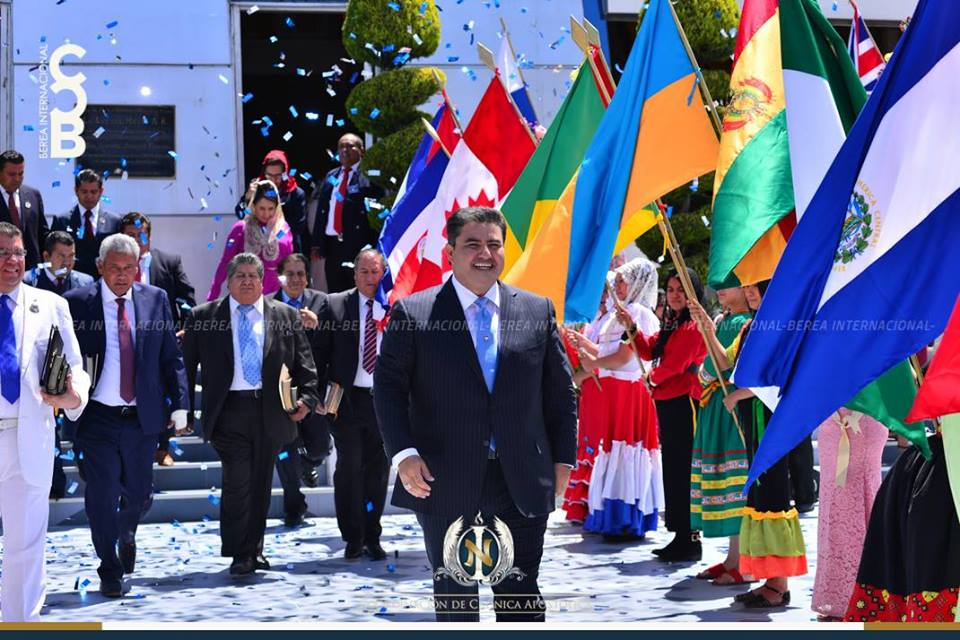
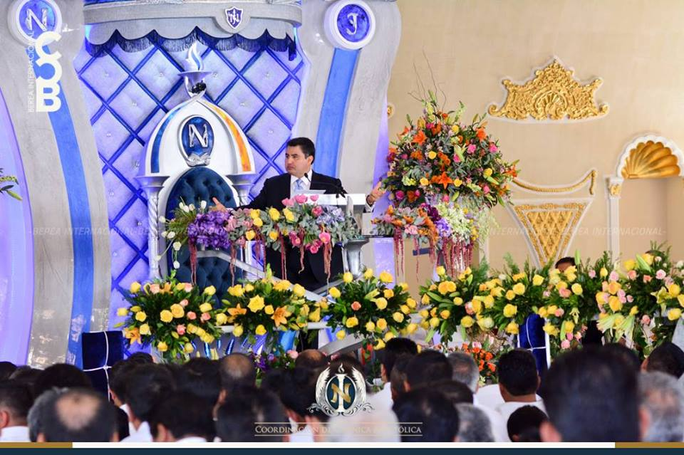
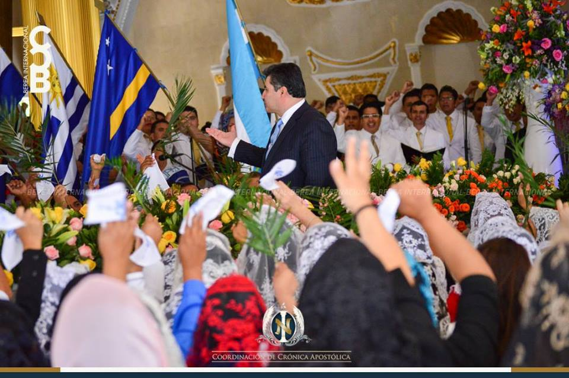
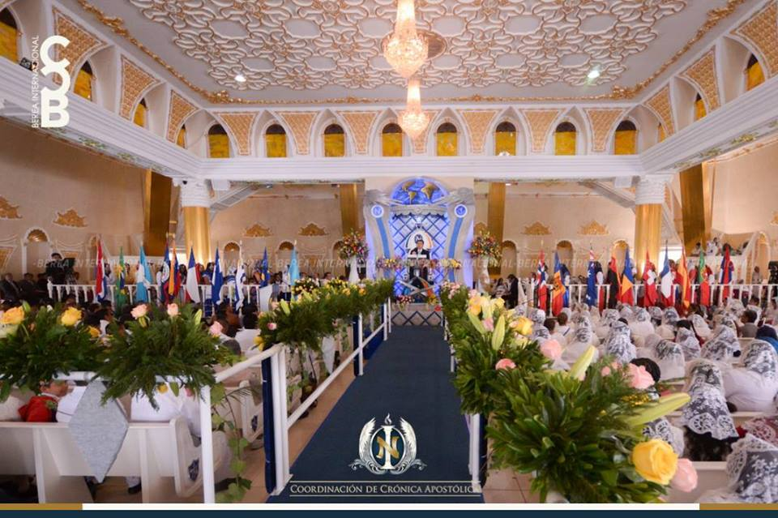
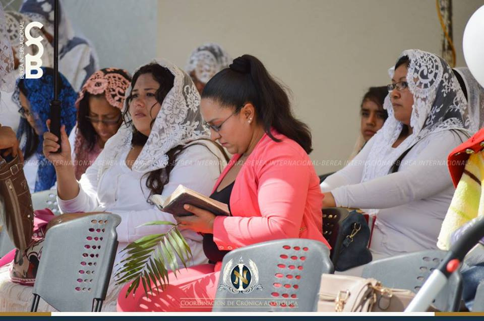

Silao, Guanajuato
Décima Etapa
(Coordinación de Crónica Apostólica).— La Torre de la fe, majestuoso santuario ubicado en el centro del país, en Silao, Guanajuato, fue el recinto en que la mañana del 9 de abril del 2017, el Apóstol de Jesucristo, Naasón Joaquín García, llevó su mensaje, acerca de la salvación, a la Iglesia del segundo estado que visitó en la décima etapa de su primera Gira Universal, disertación plasmada de sabiduría divina que llenó de júbilo a los cientos de hermanos y hermanas que ese día acudieron a la Escuela dominical para escuchar las enseñanzas apostólicas que el Ungido de Jehová, inspirado por Dios, les impartiría, a fin de consolidar la fe de las iglesias que se congregaron para recibir la bendición de la Palabra y presencia del padre de la fe.

Al connotado santuario fueron llegando, desde temprana hora, la Iglesia anfitriona de Silao, así como las de las ciudades de Irapuato, colonias Niños Héroes, Juárez y Ganadera; de León, colonias La Joya, y las de Celaya, Salamanca, Villagrán, Comonfort, Manuel Doblado, San Francisco, San José Otate, Loma tendida, Cuerámaro, acompañadas de los obreros y obreras de los once batallones que el Siervo de Dios envió a este estado a impulsar la evangelización e impartir el mensaje de salvación en esta entidad, considerado el corazón del catolicismo en México y uno de los escenarios de la Rebelión cristera que empañó de sangre al país con el conflicto fratricida que se llevó a cabo por la intolerancia oscurantista de la jerarquía católica y con la venia de las autoridades del Vaticano; pero este domingo el lugar se vistió de luz, con la veraz exposición de la doctrina que impartió el Embajador del reino de los cielos, líder y guía espiritual de la auténtica Iglesia de Jesucristo, la del Dios Vivo, Columna y Baluarte de la Verdad, La Luz del Mundo.
Los levitas de los coros de jóvenes de Hermosa Provincia y Bethel, de Guadalajara, unidos al del estado de Guanajuato, con sus melodiosos cánticos encendían el fuego espiritual de la iglesia que aguardaba el glorioso momento en que el Apóstol de Jesucristo ingresaría al sagrado recinto. Acudían también a la connotada presentación, numerosas visitas de las incipientes obras que los Batallones están evangelizando en Dolores Hidalgo, Abasolo, San Miguel allende, San Luis de la Paz, San Felipe, Pénjamo, Salvatierra, Uriangato y Romanita entre otras obras que están recibiendo la doctrina de la Iglesia de Cristo.
El espacio de la consagración
La emotiva consagración fue presidida por el hermano P.E. Benjamín Chávez Joaquín, quien invitó a la Iglesia a entonar con entusiasmo el himno n. 509, "Si oscura fue mi vida”, cántico espiritual que Dios inspiró al hermano costarricense Tulio Gómez, y en el que anima a la grey del Dios Vivo a tomar valor en la lucha, porque la espada de la Iglesia es la palabra. Después de la lectura del Salmo 34, "Bendeciré a Jehová en todo tiempo, su alabanza estará de continuo en mi boca…”, los congregados oraron a Dios por el Apóstol, quien en punto de las 10:30 ingresó al atrio de la magna Casa de Oración franqueado por una valla de abanderadas vestidas con atuendos típicos de los países y portando los lábaros patrios de las 54 naciones que han sido conquistadas para Cristo, le acompañaban, su esposa, la hermana Alma Zamora, el pastor de la Jurisdicción Centro, Camilo Sainz Urías, el pastor del Distrito XIV, Nicolás Menchaca Tristán, los Pastores evangelistas Benjamín Chávez Joaquín, Tobías López Rubio y Juan Chávez.
La feligresía se unía al canto de los Coros que unánimes entonaban la espiritual alabanza de reconocimiento a la Elección: "Hay una llama en mi alma encendida…". El Pastor Nicolás Menchaca dio la bienvenida al Apóstol, a nombre de los 200 ministros responsables de las iglesias de Guanajuato y expresó que la visita apostólica los llenaba de gloria. El coro de jóvenes, a su vez, reiteró el saludo entonando el canto de Elección: "Bendito el que viene en el nombre de Cristo”, al paso de su Ungido, que con gran emoción espiritual los saludaba y con sus brazos abiertos departía bendiciones a raudales.
Salutación apostólica
Ya en su ministerio, el Apóstol del Señor saludó a la iglesia y aceptó el recibimiento expresando que él se unía a ese hermoso regocijo y expresó que los visitaba para invitarlos a la lucha: "Iglesia entrañable de Guanajuato, mi saludo es con la fuerza del Espíritu de Dios, yo quiero que seas vestidos con la coraza de justicia y calzados los pies con el apresto del Evangelio, pero sobre todo que tomes el escudo de la fe, el yelmo de la salvación y la espada del espíritu. ¿Y por qué os saludo de esta forma?, mi saludo es una invitación a la batalla espiritual, porque soy consciente que vivís en un estado que hasta hace pocos años era cuna de engaño y mentira en el centro del país, donde era imposible que llegara la Iglesia del Señor, a causa de la intolerancia religiosa.
“En esta tierra de cristeros, Dios inspiró a un Apóstol de Jesucristo para que levantara esta hermosa torre, la cual llamó ‘Torre de la fe’ y fue aquí en Silao, donde Dios le diera un hermoso y precioso triunfo a la Elección en el año del 2012… desde entonces este Estado que se mostraba intolerante y perseguidor de la fe de los santos, abrió sus brazos al evangelio que se predica en este gigante que grita con alegría, ¡aquí esta la Iglesia del Dios Vivo Columna y Apoyo de la Verdad, en cuya Iglesia hay un Apóstol de Jesucristo…”.
Continuó diciendo que acudía a ese lugar con el deseo de que también en Guanajuato se multiplique y engrandezca el amor del Señor, y después de explicar el origen del templo de Silao, cuyo predio adquirió el apóstol Samuel Joaquín e inspirado por Dios impulsó la construcción de este templo asentado en el Centro del país, al que llamó "Torre de la fe”, "...porque se levantó cual gigante para anunciar que aquí está la Iglesia del Señor, recinto sagrado que inaugurado en 2012 y en el que se llevaron a cabo cursos de preparación para la obra, justamente durante la visita de un papa... Espacio sagrado que también su hermano Naasón ha convertido en lugar de trabajo regional y de impulso a la evangelización en la nueva era apostólica, enviando once batallones de obreros y obreras a este lugar y con el trabajo y aceptación que están teniendo, se avecina una lluvia de bendiciones". Destacó que este santuario también es importante para él, pues aquí Dios le inspiró escribir y enviar la primera carta apostólica, realizar el primer Congreso de jóvenes obreros, el primer Concilio de Pastores, los Cursos de superación para ministros de Estados Unidos y México.
Agregó que acude con frecuencia a este lugar, porque siente la imperiosa necesidad de animar con su presencia y su palabra a los ministros que imparten la doctrina en las iglesias de Guanajuato, cuna de la guerra cristera y de arraigado fanatismo, pero que gracias a Dios y a la visión que el Apóstol Samuel tuvo del futuro de la Iglesia en este lugar y el trabajo que Dios le ha permitido emprender, ahora sobreabunda la gracia, pues la luz de Cristo está disipando las tinieblas: "También su hermano Naasón ha querido que en Guanajuato se multiplique y se engrandezca el amor del Señor, por eso su hermano ha enviado once batallones a este estado, y por ello mi presencia física... no he venido a confirmar la fe ni ha preguntar si han creído en mí; cada uno de vosotros, con su voz, ya me lo ha dicho, he venido para encender aun más los corazones y a decirte que sigáis dando testimonio, que sigáis predicando, porque se avecina una grande lluvia de bendiciones y crecimiento...".
La importancia del bautismo, fuente de salvación en la iglesiaPara dar curso al coyuntural tema que ese domingo impartió el Apóstol, por medio de un canto instó a la grey presente y la iglesia universal que le escuchaba por internet, que recordara de dónde los trajo el Señor y exhortó a no olvidar la situación vergonzosa en que espiritualmente los encontró el Señor antes del bautismo, cuando adoraban a lo que por naturaleza no es Dios. Con esta intención los invitó a entonar el himno n. 114,"Cuando Cristo me encontró perdido en la iniquidad, él su mano me tendió y me dio la libertad, que libertad siento hoy para mi Cristo Jesús, su vida entregó por mí ahí clavado en la cruz...". Hermosas palabras que al entonarlas llenaban de gratitud a los congregados, y al Apóstol le hicieron exclamar: "Entonémoslo con gran orgullo y satisfacción, para que el mundo escuche nuestra voz de alegría.
Después de la alabanza, el Siervo de Dios exclamó: "Hemos sentido esa libertad y esa gracia, tú la has vivido... entonces digamos: bendito sea nuestro Señor Jesucristo, que nos ha dado esta hermosa gracia... Ahora quiero dejarte una palabra que edifique vuestra fe, que fortalezca nuestro camino para seguir adelante hacia la vida eterna. ¡Qué hermosa bendición que por la Elección, como en Jericó, se van destruyendo esas murallas¡, que han ido cayendo como el poder de ese gran inicuo, que tantos años había gobernado la tierra y había creado su propio imperio... ".
Destacó el Varón de Dios con orgullo, que en cambio, la iglesia del Señor ya tiene presencia en 54 países y hoy ya no es el pequeño grupo que era vituperado, mas ahora, agregó: han de ser cientos de almas que bendigan a Dios y vivan en la fe de la doctrina de la iglesia que los rescató y dio a conocer el camino de la salvación, medular enseñanza que el Apóstol llevó en esta presentación.
Mensaje a las visitas que acudieron a la presentación apostólicaAntes de desglosar su tema se dirigió a las numerosas visitas que por primera vez acudían a escuchar el mensaje de un Apóstol, a quienes dijo que fue Dios el que utilizando algún medio u otro, les permitió acudir: "Hoy han venido a donde reina la fe, que significa creer en lo que entiendo, contrario al fanatismo, que es ignorancia e induce a aceptar sin investigar el origen de aquella creencia...". Les explicó que la Iglesia del Señor se rige por las enseñanzas y consejos del Señor Jesucristo, que en Lucas 13: 23 invita a " escudriñar las Escrituras, porque ellas dan testimonio de Cristo y su doctrina de salvación, porque para eso vino el Señor, a traer salvación, para que el que en Él crea no se pierda, mas tenga vida eterna", e invitó a los congregados a hacer uso de esa chispa milagrosa de inteligencia espiritual que Dios da para comprender y discernir lo que Él quiere de nosotros.
La salvación, tema doctrinal de la disertación apostólica en la Torre de la fe